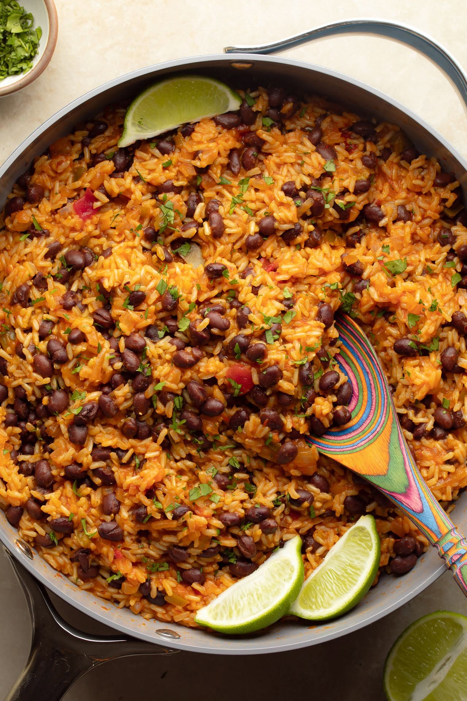

Rice and Beans

Ingredients
- Olive oil: 2 tbsp
- Diced onion: 1 small
- Diced poblano pepper: 1 small
- Chopped garlic: 1 clove
- Basmati rice: 1 cup
- Paprika: 2 tsp
- Ground cummin: 1 tsp
- Dried oregano: 1 tsp
- Tomato paste: 2 tbsp
- Vegetable broth: 2 cups
- Canned Black beans: 1 can
- Salt and pepper to taste
Steps
- Heat olive oil in medium pot over medium-high heat
- Saute onion, poblano pepper, and garlic for 2 to 3 minutes
- Add rice and cook for about 2 minutes; stir occasionally
- Season with paprika, cumin, oregano, salt and black pepper
- Stir in tomato paste and cook for 1 to 2 minutes
- Add vegetable broth and black beans
- Bring to a boil and then reduce the heat to low
- Cover and simmer for about 15 to 20 minutes until the rice is tender
- Remove the pot from the heat and keep it covered
- Let it sit for about 5 minutes then fluff the rice with a fork
- EAT! Don't burn your mouth!